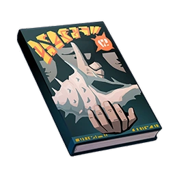

Nod-Krai · Books & Literature
Conch Echoes
Conch Echoes is an anonymous two-volume Nod-Krai folk tale about exiled children who give a conch the right to speak. A power struggle breaks their pact, while the second volume imagines Shorty restoring shared access and founding a town. The story echoes the Conch Gang’s Nasha Town origin tale, though the game does not name its characters or identify it as a literal chronicle.

Book record and local tradition
Conch Echoes is a two-volume Book Collection in Nod-Krai. Both volumes are sold by Dhabit at Mimisbrunnr Books in Nasha Town. Their descriptions present the story as a tale passed down in the region since ancient times and say that its original author has long been forgotten.
The book therefore offers local folk memory, not a named witness account or a dated record of Nasha Town. Its characters have no personal names beyond the nickname Shorty, and the text does not identify them with known people from Nod-Krai.
Volume I: the conch gives its holder a voice
The first volume opens on the thirtieth night of a group of children’s exile in a wasteland they call the Outlands. The story says the adults had made the children slaves; the adults have died, while the children still struggle to survive. Around a bonfire, the children make a secret pact that whoever holds a conch has the right to speak.
The conch becomes the center of a proposed system for choosing a leader: a capable child will guide the others through hardship and hold the shell. The tale treats the object as both a practical speaking token and the symbol of a political agreement made by children who want to escape their former status.
When the pact becomes another hierarchy
A handsome young man arrives with followers and asks Shorty to give him the conch. He says the group had already agreed that the holder may speak. But he also has the blade, says he has worked hardest and received the most in return, and agrees that he will command everyone.
The story’s central tension is that an agreement intended to give the children a voice can be captured by someone with a weapon and a claim to leadership. Shorty hands over the shell and walks toward the forest; after that night, the boy who held the conch seems to vanish. The text does not explain his motive for leaving or say whether the young man’s new rule lasted.
Volume II: the shell returns
The second volume follows the girl with glasses as she finds Shorty. The young man has collapsed in a chair, his hands stiff and the blade fallen nearby; the narration notes no visible wounds and does not explain what happened to him. Shorty says he began to expect this outcome when the young man first demanded the conch.
An unnamed pair of hands places the shell in Shorty’s hands. He notices red marks left by coarse rope, tries to blow the conch, and then hears the sound of waves from it. That small scene leaves the physical object ordinary while allowing its political meaning to persist through the children’s repeated use.
The Conch Gang and Nasha Town
The Traveler’s Nod-Krai voice-over tells a parallel origin story: the Conch Gang is said to have been the first group to take over Nasha Town, and Paimon describes the image of a children’s Elysium being absorbed as adults move in. The Traveler calls it a story they heard, says it mentions no superpowers, and imagines the children simply gathering in what is now the market square.
That account closely echoes Conch Echoes through its children, conch, Nasha Town, and fragile child-led haven. The book’s own description also calls it an old local tale. The game does not say that this exact book is the Traveler’s source, however, and it never identifies Shorty, the handsome young man, or the girl with glasses as historical Conch Gang members.
A political parable, not a full chronicle
Read as a parable, the two volumes trace a repeated danger: people overthrow a coercive order, create rules for shared speech, and then risk reproducing domination through control of the rules and the tools of force. The ending imagines a different arrangement, but also accepts that later generations may have to challenge it.
The text does not provide a calendar date, the identity of its author, the real names of its children, or a verified account of how Nasha Town was founded. The Traveler’s voice-over strengthens the connection with the Conch Gang’s popular origin story while preserving its status as hearsay. Historical identifications beyond those points remain unconfirmed.
This is an original CoreGG reading guide, not an official HoYoverse article or a reproduction of the game text. Source links below identify the records used so you can check the original context.
Sources & references
Check these sources for the original game text and reference trail.